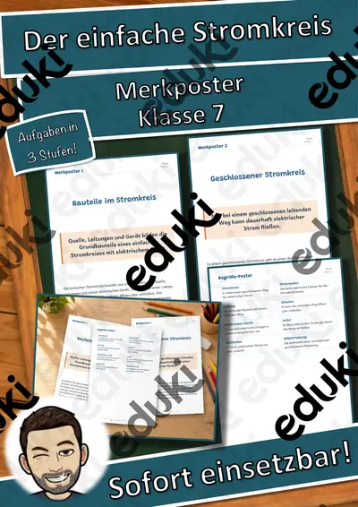
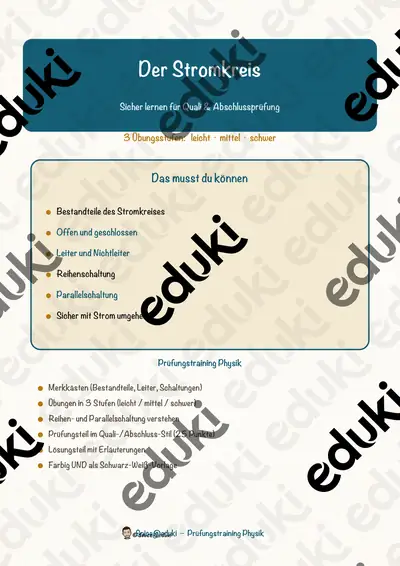
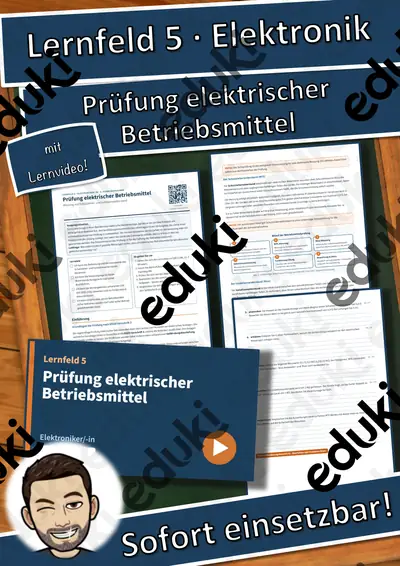

Der elektrische Stromkreis – Sachtext mit Aufgaben (Klasse 7)
Der elektrische Stromkreis – Sachtext mit Aufgaben (Klasse 7)Aufbau, Stromweg und einfache Schaltungen verstehen
Mit diesem Material (Sachtext mit Aufgaben) bringe ich das Thema „Strom & Stromkreise“ klar strukturiert in den Unterricht. Alles ist sofort einsetzbar: ausdrucken, kopieren, loslegen.
Lernziele:
- Du benennst die wichtigsten Bauteile eines einfachen Stromkreises und erklärst ihre Aufgaben.
- Du unterscheidest einen offenen von einem geschlossenen Stromkreis.
- Du verfolgst den Stromweg und beschreibst einfache elektrische Schaltungen fachgerecht.
Differenziert dort, wo es sinnvoll ist: Die Aufgaben gibt es in genau drei Stufen (★ leicht, ★★ mittel, ★★★ schwer). Info-, Merk- und Begriffsseiten sind für alle gleich.
Enthalten (11 Seiten):
- Hinweise für die Lehrkraft
- Sachtext
- Wichtige Begriffe
- Aufgaben ★
- Aufgaben ★★
- Aufgaben ★★★
- Begriffe-Training
- Lösungen
Die Seiten für die Lehrkraft (Hinweise, Lösungen) sind oben rechts mit einer roten Ecke markiert. Alle Texte sind eigens für dieses Material geschrieben und fachlich zweifach geprüft.
Viel Freude beim Einsatz wünscht Snice
Ähnliche Materialien

Der Stromkreis – Lesespurgeschichte mit Rätselaufgaben (Klasse 7)

Stromkreis Lückentext mit Wortspeicher Hörverstehen und Suchsel

Strom und Magnete – Forscherheft mit Versuchen, Postern und Stromkreis-Werkstatt Kl. 3–4

Der einfache Stromkreis – Merkposter (Klasse 7)

Der Stromkreis – Prüfungstraining Physik (Klasse 8)

Die Solarzelle – Lesespurgeschichte mit Rätselaufgaben (Klasse 9)

Lernfeld 5 Elektroniker/-in: Prüfung elektrischer Betriebsmittel – Einführung, Übungen, Lösungen + Lernvideo